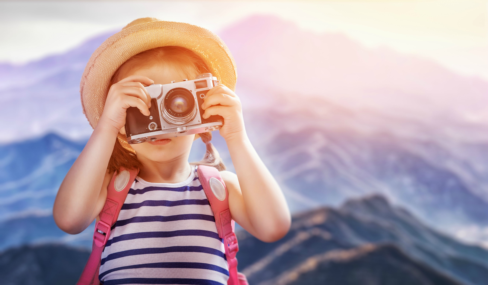

Want to be a happy traveler? Here are some positive traits you can embody to make the most of your trips by tweaking your attitude:

1. Adaptable
Happy travelers usually have the ability to adapt to unique situations and cultures and can assimilate instead of feeling like an awkward outsider the entire time. This doesn’t mean you need to start dressing like a local and mimicking their every move,
but it does mean you’ll be happy eating unique foods, sleeping in unusual (to you) accommodations, and shopping in bustling markets without having an anxiety attack. When I was in Ghana,
Africa, I lived with a local woman in her home. My tastebuds and protein-hungry body weren’t really accustomed to the diet high in root vegetables and rice that the locals were, but instead of complaining I looked at the bright side:
I was getting to experience a first-hand account of living and eating in a local home.
2. Respectful
Showing respect for the culture you are traveling in will not only make the locals happy; it will make you happy, as well. Researching the traditions, customs, and etiquette of a place before you leave and knowing how to properly behave once you are there will make it more likely for locals
— as well as other travelers — to treat you kindly and fairly. Moreover, you’ll run into less awkward and tense encounters, making for a more pleasant travel experience. Before visiting Thailand, I made sure to read about the local etiquette before arriving, so I knew it was considered disrespectful to enter a temple when showing
your knees and shoulders. My friend, however, refused to wear sleeves in the hot weather and instead donned shorts and tank top. Once we got to the temple I was ushered in while she was forced to wrap her entire body in old newspaper. She got a lot of odd stares and was mortified, to say the least.
3. Curious
A curious nature is usually a sign of a happy traveler, as an instinct to want to learn about new sights and experiences in the foreign land you are visiting will lead you to a more fulfilling experience. You’re more likely to be entertained by new information and to take unique and even possibly
uncomfortable new experiences as a learning opportunity. When I was in Chengyang, China, I attended a Dong Minority Cultural Show in the center of the village. To my shock (and a bit of horror), one of the dancers pulled me up in front of the entire village and made me dance with them. At first I was nervous, but afterward I felt happy
that I got to experience participating in such a unique cultural activity.
4. Flexible
When traveling, things are not always going to go your way. Flights may be canceled, luggage misplaced, hotels overbooked, air conditioners can break, you may get a stomach sick from foreign bacteria; basically, you should be ready to change your plans a bit if need be without allowing it to ruin
your trip. When I flew to Nice, France, the airline lost my luggage and I had to stay in the city an extra four days to get it back, meaning I had to cut my time in Italy short. Was I upset? Yes. Did I let it ruin my trip? No. Instead, I got to know the city of Nice a lot better than I would have with my previously planned short stay.
5. Adventurous
A sense of adventure is always important when on the road. This doesn’t mean you need to sky dive and bungy jump everywhere you go (although, I highly recommend both). It just means you should be up for trying new things that you normally wouldn’t try. Before going to Cairns, Australia, I never
thought I would conquer my fear of heights; however, after being forced by my friends to bungy jump, cliff dive, and sky dive, I not only learned how fun adrenaline rushes could be, but also that I was capable of a lot more than I believed.
6. Open-Minded
It can be hard to comprehend the fact that not everyone all over the world thinks like you do. In some of the places I’ve visited it’s been hard for me to stomach the role of woman or animals or some of the religious beliefs people have, but you’ve got to remember that if these people visited your
hometown they would probably be uncomfortable, as well. Instead of judging as if your culture is better, try to understand where a community’s beliefs come from. It’ll much easier to be a happy traveler if you do.
7. Optimistic
The happiest travelers see the glass as half full, not as half empty. An overbooked hotel is the chance to find an even better accommodation, a packed out museum is sign the collection is good, and a rainy travel day is the chance to see a city from a new light. When I was in Interlaken, Switzerland,
it rained every single day I was there. Instead of sitting inside like many of the other people in my hostel did, I bought a poncho and an umbrella and spent everyday hiking the Swiss Alps. The scenery was still beautiful, and the sound of the rain brought a calm peace over the setting that wouldn’t have been experienced without the bad weather.
8. Social
Being social and friendly is essential to making acquaintances and friends when traveling. Even if you’re already with friends, it’s always nice to interact with locals and learn something about the culture or even with other travelers to share travel experiences. I’ve met people in all types of settings
while traveling; hostels, bars, restaurants, money exchanges, parks, on tours, museums, churches, castles, and airports. Sometimes it’s a brief chat discussing where you’re from or where you’re off to, sometimes it’s planning day trips together, and other times it’s gone on to become longer travel experiences together. Many times, the people
you meet along the way during your travels are what really make the trip fun.